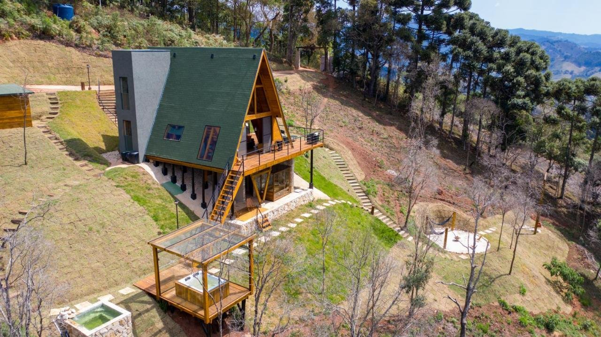

Nossa cabana foi projetada para oferecer o máximo de conforto e viver experiências únicas. Acorde com o canto dos pássaros, aproveite um café da manhã com vista para as montanhas e termine o dia relaxando sob um céu estrelado incrível.

Estamos localizados na região da grande florianópolis, em Santo Amaro da Imperatriz.
Dúvidas? Entre em contato pelo Instagram @SuaCabana ou pelo WhatsApp.
Lunar Horizon descrito por nossos hóspedes